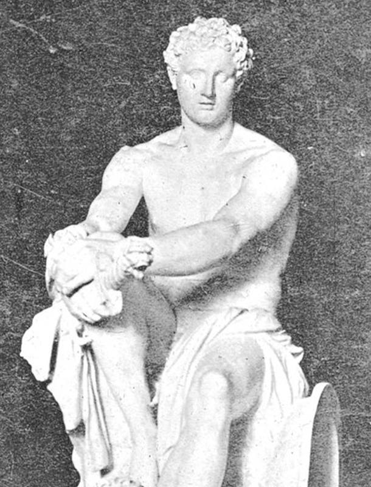

We are the Mars Colonization Project. The Project began in 2012 when natural threats to civilization such as wildfires, combined with man-made horrors such as the Chemical War with Canada, heightened crime rates, and oil spills, began to make a group of philanthropists question the security of our future on this rock we call Earth. The subsequent bombings on D.C. in 2020 and 2026 only reaffirmed the thing we had been slowly realizing: soon mankind would have to start over, or fade from existence altogether.
The Project, inasmuch as it can be said to belong to any one person, belonged from the first to Nathan. A self-made millionaire by the age of seventeen, Nathan had already made himself a name in many industries when he began the Project. From a young age his first passion was real estate, but then turned his accumulated wealth to charity. After working with many nonprofits the world over to save rare species of wildlife, Nathan felt moved to act with regard to the state of his fellow man. In 2011 he began his search for like-minded persons with which he could collaborate to ensure the future of humanity would happen, whether or not the planet would last.
In terms of academic prowess, there is little remarkable about Jessica. Her strengths lie in organization and public relations. She had been a close personal friend of Nathan’s since childhood, and as the Project began to take shape, Nathan became the first to recognize Jessica’s potential by putting her in charge of the Project’s public relations. As an exclusively privately and crowd-funded project, this was a massively important undertaking. Jessica excelled at this assignment and soon the world at large knew of the Project. And not only that: they wanted in. Partnerships, sponsorship and donation flooded in and only through Jessica’s expertise is what we’ve accomplished thus far possible.
Cliff’s IQ set a new record every time it was tested. With seemingly little effort, or even interest in academic pursuit, Cliff tested out of no less than five entire grades, resulting in a projected highschool graduation at the age of only 12. Despite being held back due to felonious activity, Cliff would enroll at MIT at the age of 16, and proceed to graduate with a degree in computer science only two years later. He was offered a position by NASA, but turned it down as he didn’t like the time commitment necessary. When he was approached by Nathan about the Project he readily agreed to collaborate and now leads our tech team.
He saw what was coming and got out of the way.